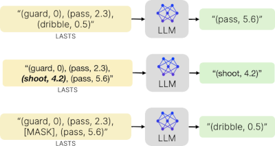
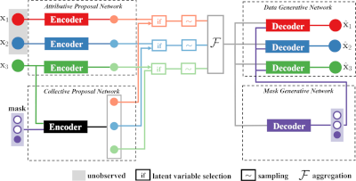
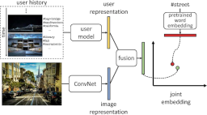
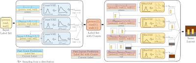
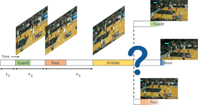
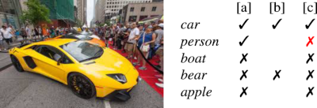
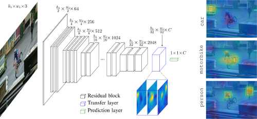
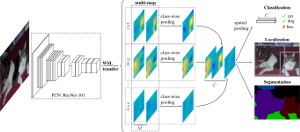
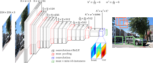
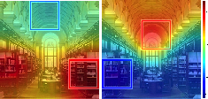

|
Thibaut Durand I'm a Staff Machine Learning Researcher at RBC Borealis (formerly Borealis AI) in Vancouver, BC, Canada, where I work at the intersection of ML and finance, creating intelligent and human-centered systems that bring meaningful change to the future of banking. Previously, I was a Postdoctoral Fellow in Computer Vision and Machine Learning at Simon Fraser University, working under the supervision of Greg Mori. I earned my PhD from Sorbonne University in Paris, France, where I was advised by Matthieu Cord and Nicolas Thome. My thesis was focused on weakly supervised learning for visual recognition and was recognized with PhD awards from AFRIF and DGA. I regularly serves as an Area Chair or reviewer at major computer vision and machine learning conferences, including CVPR, ICCV, ECCV, ICLR, NeurIPS, and ICML. I'm French and Swiss, and my name is pronounced Tibo. |

|
ResearchMy research focuses on machine learning and deep learning, with a particular interest in weakly supervised learning, temporal modeling, and multimodal learning. These areas are key to building human-centred AI systems that understand the complex and dynamic nature of the real world. I have a background in computer vision, but I enjoy exploring new modalities and currently work extensively with asynchronous time series, also known as event-based data. Below are selected publications presented at top-tier conferences and journals. For the full list, please visit my Google Scholar profile. |
|  |
LAST SToP For Modeling Asynchronous Time Series
Shubham Gupta, Thibaut Durand, Graham Taylor, Lilian W. Białokozowicz ICML, 2025 arXiv / poster LAST SToP is an efficient method to adapt LLMs for asynchronous time series while preserving semantic information through language. |
|  |
Variational Selective Autoencoder: Learning from Partially-Observed Heterogeneous Data
Yu Gong, Hossein Hajimirsadeghi, Thibaut Durand, Jiawei He, Greg Mori AISTATS, 2021 paper / supp / arxiv Variational Selective Autoencoder is a model designed to learn from partially observed heterogeneous data by selectively encoding observed features and effectively handling missing information. |
|  |
Learning User Representations for Open Vocabulary Image Hashtag Prediction
Thibaut Durand CVPR, 2020 (Oral Presentation) paper A model that learns user-conditioned representations to improve open vocabulary image hashtag prediction by capturing individual user preferences and context. |
|  |
LayoutVAE: Stochastic Scene Layout Generation From a Label Set
Akash Abdu Jyothi, Thibaut Durand, Jiawei He, Leonid Sigal, Greg Mori ICCV, 2019 paper / supp / arxiv LayoutVAE is a generative model that learns to produce diverse and coherent scene layouts from a given set of object labels using a variational auto-encoder framework. |
|  |
A Variational Auto-Encoder Model for Stochastic Point Processes
Nazanin Mehrasa, Akash Abdu Jyothi, Thibaut Durand, Jiawei He, Leonid Sigal, Greg Mori CVPR, 2019 paper / arxiv A variational auto-encoder framework for modeling stochastic point processes by learning flexible representations of temporal event data using neural networks. |
|  |
Learning a Deep ConvNet for Multi-label Classification with Partial Labels
Thibaut Durand, Nazanin Mehrasa, Greg Mori CVPR, 2019 paper / supp / arxiv A deep ConvNet approach for multi-label classification that can learn effectively from partially labeled data by leveraging label correlations and handling label uncertainty during training. |
|  |
Exploiting Negative Evidence for Deep Latent Structured Models
Thibaut Durand, Nicolas Thome, Matthieu Cord, TPAMI, 2018 paper / code A deep latent structured model that incorporates negative evidence through a novel pooling strategy, enabling more accurate classification, ranking, and weakly supervised segmentation by explicitly penalizing incorrect class predictions. |
|  |
WILDCAT: Weakly Supervised Learning of Deep ConvNets for Image Classification, Pointwise Localization and Segmentation
Thibaut Durand, Taylor Mordan, Nicolas Thome, Matthieu Cord, CVPR, 2017 paper / supp / code WILDCAT is a weakly supervised ConvNet that, using only global image labels, learns multiple class-specific feature maps plus a novel min/max pooling mechanism to enable image classification, point-wise localization, and semantic segmentation. |
|  |
WELDON: Weakly Supervised Learning of Deep Convolutional Neural Networks
Thibaut Durand, Nicolas Thome, Matthieu Cord, CVPR, 2016 paper / supp / code WELDON is a weakly supervised deep learning approach that improves image classification and localization by selecting and aggregating both the most and least activated regions in convolutional feature maps using a novel pooling strategy. |
|  |
MANTRA: Minimum Maximum Latent Structural SVM for Image Classification and Ranking
Thibaut Durand, Nicolas Thome, Matthieu Cord, ICCV, 2015 paper / code MANTRA is a latent structural SVM framework that optimizes both minimum and maximum scoring regions in images to improve weakly supervised image classification and ranking tasks. |
|
Design and source code from Jon Barron's website |